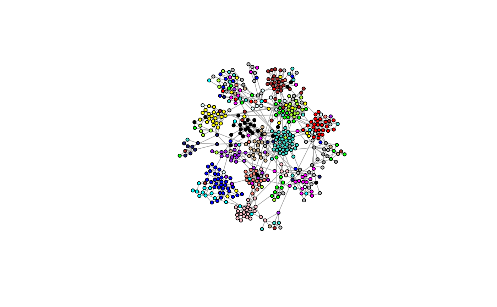
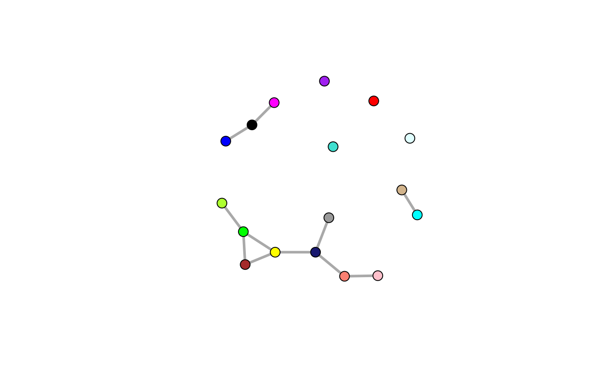
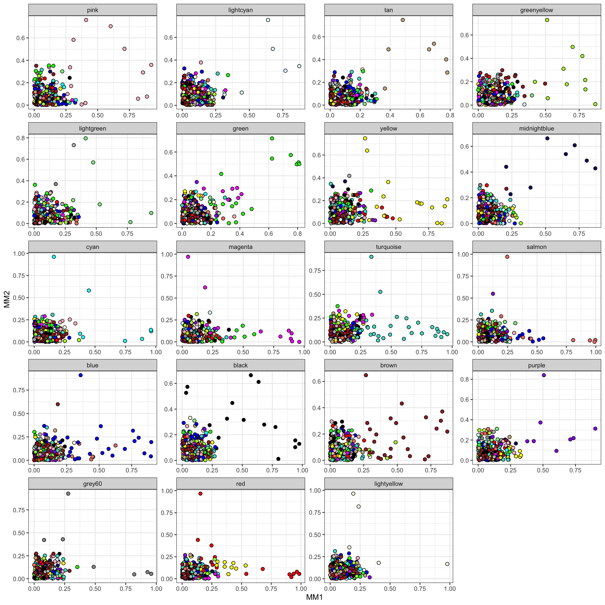
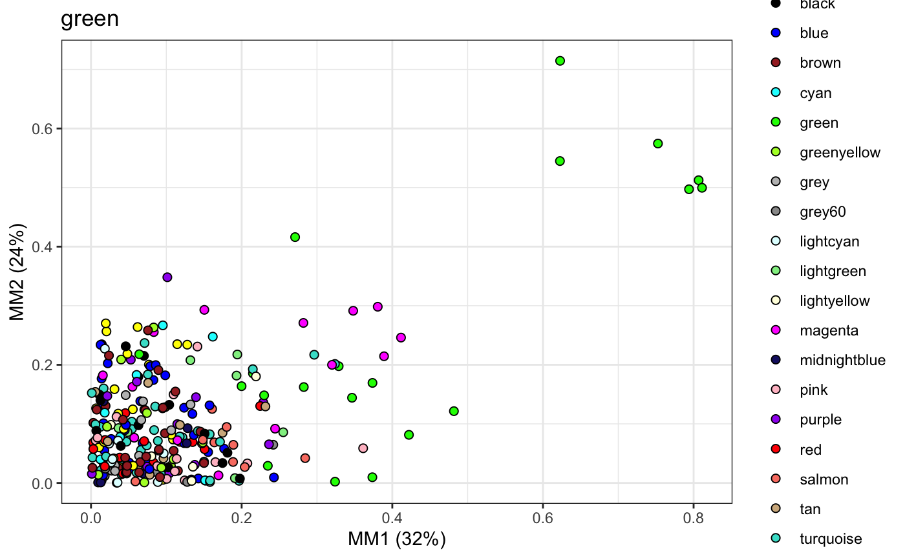

Structure Constraints
constraints.RmdTo aid in the inference of networks with small sample sizes, we apply biolgically sensible constraints to learning the network structure. To find constraints for the networks, we first establish a network structure in a lower dimensional space using zero-order correlation between genes, which can be computed with few samples.
library(shine)Simulated Data
As an example, we generate an undirected scale-free network using the Barabási–Albert model with 300 nodes (n) and simulate 100 samples (p) that follow a multivariate normal distribution.
Generate Scale-Free Graph
g <- readRDS(file.path(system.file("extdata", package="shine"), "models.rds"))
model.plot(g)
Simulate Multivariate Gaussian Data
data <- model.sim(100, g, seed=1)
bdg <- data$bdg
eset <- data$esetConstraint Methods
We use a specific version of the Weighted Gene Co-Expression Analysis method to identify gene modules where are clustered by their co-expression similarity and hierarchically clustered into gene modules of tightly co-expressed genes. However any method of identifying co-expression modules is applicable. Establishing gene modules captures coordinated co-expression of genes in a network that approximately follows a scale free topology.
wgcna <- mods.detect(eset, min.sft=0.85, beta=3, min.size=10, cores=1, do.plot=T)
table(wgcna$colors)Here we relay the modules back on the true graphs structure…
igraph::V(g)$color <- wgcna$colors
model.plot(g, colors=TRUE)
Isolated Modules
Now that we’ve identified co-expression modules, we could build networks for each module independently, assuming there is no cross-talk between module genes.
wgcna$mods$grey <- NULL
str(wgcna$mods)List of 17
$ pink : chr [1:27] "1" "33" "36" "54" ...
$ black : chr [1:27] "2" "32" "69" "93" ...
$ green : chr [1:31] "3" "9" "48" "89" ...
$ yellow : chr [1:33] "5" "11" "13" "35" ...
$ purple : chr [1:26] "6" "18" "28" "94" ...
$ salmon : chr [1:22] "7" "12" "15" "39" ...
$ red : chr [1:29] "8" "55" "59" "63" ...
$ greenyellow : chr [1:25] "14" "88" "119" "123" ...
$ brown : chr [1:35] "16" "19" "25" "27" ...
$ turquoise : chr [1:58] "17" "66" "84" "101" ...
$ lightcyan : chr [1:13] "20" "61" "152" "155" ...
$ tan : chr [1:24] "21" "34" "46" "131" ...
$ magenta : chr [1:26] "22" "29" "31" "49" ...
$ grey60 : chr [1:13] "23" "43" "53" "65" ...
$ midnightblue: chr [1:14] "24" "76" "104" "148" ...
$ blue : chr [1:43] "26" "50" "51" "58" ...
$ cyan : chr [1:19] "37" "41" "42" "77" ...
ig.iso <- g
for (x in wgcna$mods) {
pairs <- combn(x, 2)
e <- igraph::edges(pairs)
ig.iso <- ig.iso + e
}
model.plot(ig.iso, colors=TRUE)
While this would greatly reduce the dimensionality of the problem, this will result in a disconnected global structure with no inter-module connections! This should only be used in the most extreme cases where the search complexity is too high.
Interacting Modules
Alternatively, we could limit interactions between modules by identifying modules likely to be interacting. In other words, we look for a meta network at the module level first. Using a meta network of co-regulated gene modules, we can represent each module as an eigengene, which is the first principle component (PC1) of the expression values of genes within a given module, resulting in a module x sample matrix. Within this lower-dimensional representation of the network, we establish conditional independence between modules by measuring the pairwise partial correlation.
wgcna$mods$grey <- NULL
wgcna$eigengenes$grey <- NULL
metanet <- bdg.metanet(wgcna$eigengenes, mpl=TRUE, cut=0.25, iter=25000, cores=3)
V(metanet$ig)$color <- names(V(metanet$ig))
plot(metanet$ig, vertex.size=10, edge.width=3, vertex.label=NA)
Now we might enforce constraints where interactions are allowed within modules or between connected modules.
Extended Modules
Alternatively to this all-or-nothing approach (when considering inter-module connections), we could determine secondary membership of individual nodes, which would result in inter-module interactions. We do this through the concept of fuzzy membership, where the membership of an individual node can be considered for each module.
mod.plot(wgcna$dat, wgcna$mods, mod="black", wgcna$colors, size=3)
Here we plot each node by its membership scores (MM1 & MM2) for the black module. Membership of a node in a given module is its correlation with the first and second eigengene (PC1 & PC2). Here we see the nodes with primary membership in the black module have high membership scores, as expected. Now assigning secondary membership to nodes not originally put in the black module is treated as a classification problem using QDA.
fuzzy.plot(wgcna$dat, wgcna$mods, mod="black", p=0.9)
We extend the black module to its primary and now secondary members. And repeat the process for extending every module.
mods.plot(wgcna$dat, wgcna$mods, wgcna$colors, ncol=5, size=2.5)
fuzzy <- fuzzy.mods(wgcna$dat, wgcna$mods, p=0.9)
fuzzy$grey <- NULL
mods <- sort(sapply(wgcna$mods, length), decreasing=TRUE)
sapply(fuzzy, length)[names(mods)] turquoise blue brown yellow green red
68 50 46 40 36 35
pink black purple magenta greenyellow tan
32 36 31 32 31 29
salmon cyan midnightblue lightcyan grey60
27 26 17 19 19 turquoise blue brown yellow green red
10 7 11 7 5 6
pink black purple magenta greenyellow tan
5 9 5 6 6 5
salmon cyan midnightblue lightcyan grey60
5 7 3 6 6 With our modules extending, we enforce constraints where interactions are allowed within these extended or fuzzy modules. Thus intra-module interactions and only the most likely inter-module interactions will be considered.
Extensions
This idea can be extended to the many module detection algorithms released in recent years. Check out A Comprehensive Evaluation of Module Detection Methods for Gene Expression data for an excellent review and comparison. Additionally you can check out these other module detection wrappers scripts.